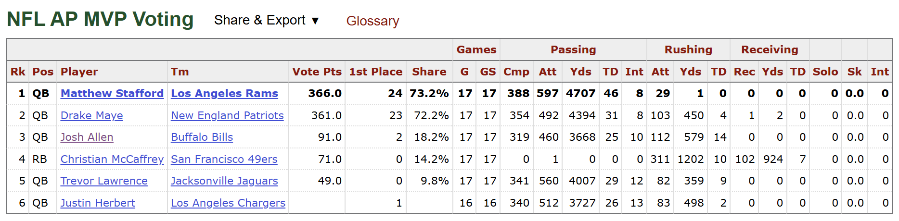
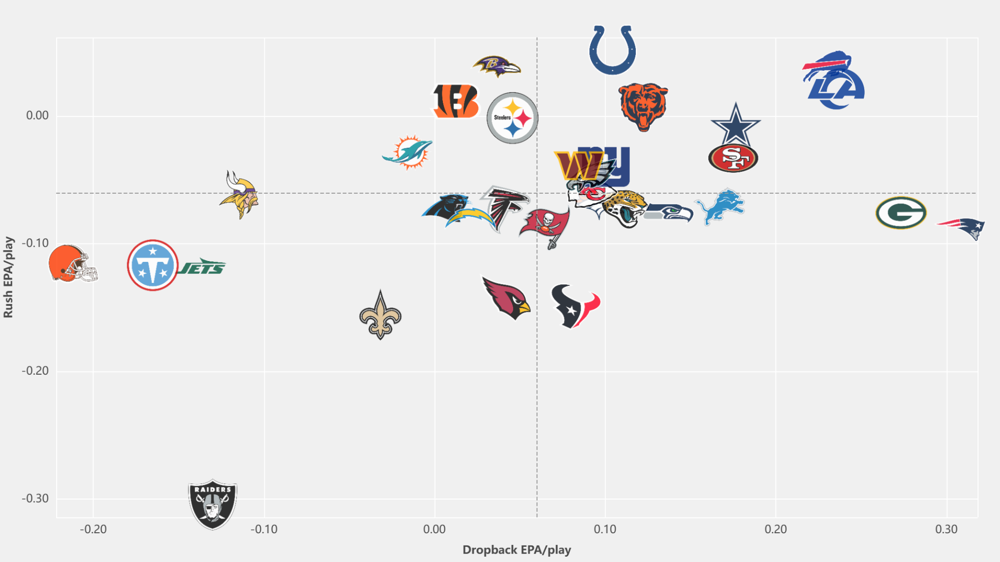
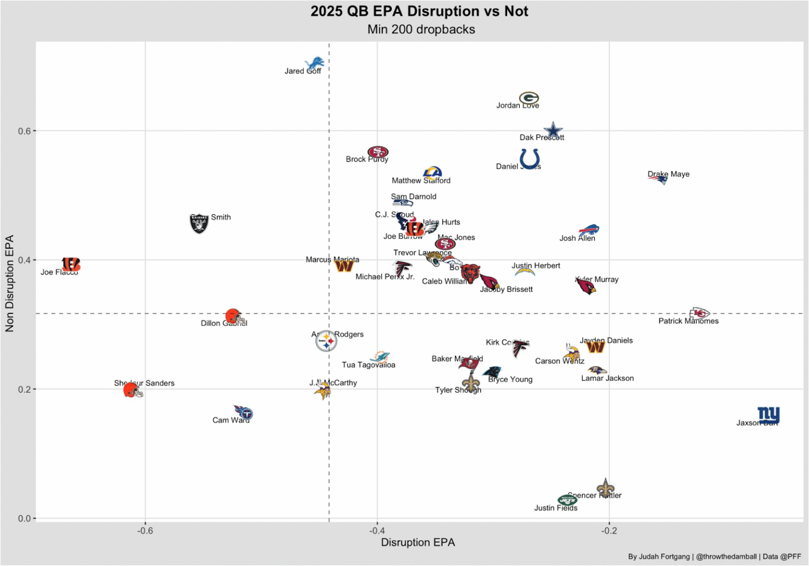

Why I’m Still All In on Drake Maye
After the first three games this season, you’d have thought Drake Maye was a couple more bad weeks away from getting benched. Somehow, his run to the Super Bowl feels like it’s being held against him because of how poorly he played along the way. He might actually have a better reputation right now if the Patriots had just lost to the Chargers in the wild-card round. That’s a strange way to evaluate a now third-year quarterback who was the MVP runner-up for a team that wasn’t exactly teeming with talent. While the haters are keen to write him off, I’d like to explain why I remain as all in as ever.
Maye didn’t just get a few courtesy MVP votes because he was a promising young quarterback on a winning team. He received 23 first-place votes to Matthew Stafford’s 24, finishing just five points behind him, 361 to 366. He was right there. Somewhere between the end of that regular season and the start of this one, the conversation seems to have forgotten just how good he was.

I understand why people are concerned. He had a brutal first three games this season, especially the fourth quarter of the 2026 season opener against Seattle and the Jaguars game. The turnovers are legitimately worrying, especially on the heels of a playoff run that exposed his inexperience and the Patriots’ offensive limitations. But I think the reaction has gone too far.
Then came Buffalo and Las Vegas. Maye followed three touchdown passes against the Bills with 374 passing yards, four passing touchdowns and a rushing touchdown in a 45–17 win over the Raiders. Two good games don’t erase the mistakes. But they make the rush to write him off look pretty ridiculous.
Let’s establish how good he actually was
Maye completed 72.0% of his passes for 4,394 yards, 31 touchdowns and eight interceptions, leading the NFL in completion percentage, yards per attempt and passer rating. He added another 450 yards and four touchdowns on the ground. That’s an exceptional season for any quarterback, let alone a second-year player leading an offense few people expected much from.
To put his season in perspective, I pulled the 30 highest total-EPA quarterback seasons in the play-by-play era (since 1999). EPA, or expected points added, measures how much each play improves or hurts an offense’s expected scoring position. Combining passing and rushing EPA accounts for both ways a quarterback contributes. I also included EPA per play to compare efficiency alongside total production. If you want a deeper dive into how EPA works, this article is a good place to start.
Maye’s 177.4 total EPA ranks 17th among quarterback seasons from 1999 through 2025. He also led qualifying quarterbacks in EPA per play in 2025, at 0.276, which ranks 28th among qualifying seasons since 1999.
The table includes how many regular-season games each team played, alongside the original EPA totals and schedule columns. You can sort these 30 seasons by total EPA or EPA per play using the control above the table. Sorting by efficiency reorders the same group; it doesn’t select a new top 30.
The 30 highest total-EPA quarterback seasons, with original SOS
| Total EPA rank | Quarterback | Year | Team | Team games | Total EPA | EPA/play | SOS rank | Opp. win % |
|---|---|---|---|---|---|---|---|---|
| 1 | Tom Brady | 2007 | NE | 16 | 258.9 | 0.407 | T-24 | 46.9% |
| 2 | Patrick Mahomes | 2018 | KC | 16 | 237.0 | 0.356 | T-26 | 48.0% |
| 3 | Peyton Manning | 2013 | DEN | 16 | 233.4 | 0.329 | T-26 | 46.9% |
| 4 | Aaron Rodgers | 2011 | GB | 16 | 227.3 | 0.381 | 28 | 45.7% |
| 5 | Patrick Mahomes | 2022 | KC | 17 | 217.4 | 0.296 | 30 | 45.3% |
| 6 | Drew Brees | 2011 | NO | 16 | 217.1 | 0.308 | 32 | 44.1% |
| 7 | Peyton Manning | 2004 | IND | 16 | 211.6 | 0.396 | 15 | 50.0% |
| 8 | Tom Brady | 2011 | NE | 16 | 205.6 | 0.300 | T-30 | 44.9% |
| 9 | Patrick Mahomes | 2020 | KC | 16 | 203.6 | 0.303 | 26 | 46.5% |
| 10 | Lamar Jackson | 2019 | BAL | 16 | 198.9 | 0.331 | 18 | 49.4% |
| 11 | Tom Brady | 2012 | NE | 16 | 197.8 | 0.288 | T-21 | 49.6% |
| 12 | Aaron Rodgers | 2020 | GB | 16 | 189.2 | 0.324 | 32 | 42.8% |
| 13 | Aaron Rodgers | 2014 | GB | 16 | 188.9 | 0.320 | T-23 | 48.2% |
| 14 | Josh Allen | 2024 | BUF | 17 | 187.1 | 0.312 | T-27 | 46.7% |
| 15 | Peyton Manning | 2006 | IND | 16 | 185.6 | 0.312 | T-14 | 50.0% |
| 16 | Lamar Jackson | 2024 | BAL | 17 | 183.9 | 0.289 | 8 | 52.9% |
| 17 | Drake Maye | 2025 | NE | 17 | 177.4 | 0.276 | 32 | 39.1% |
| 18 | Josh Allen | 2020 | BUF | 16 | 169.0 | 0.241 | 12 | 51.2% |
| 19 | Daunte Culpepper | 2004 | MIN | 16 | 167.7 | 0.246 | 22 | 48.0% |
| 20 | Matt Ryan | 2016 | ATL | 16 | 166.6 | 0.275 | 25 | 48.0% |
| 21 | Philip Rivers | 2009 | SD | 16 | 166.4 | 0.310 | 28 | 45.3% |
| 22 | Jared Goff | 2024 | DET | 17 | 165.4 | 0.273 | 12 | 51.6% |
| 23 | Drew Brees | 2018 | NO | 16 | 164.9 | 0.307 | T-23 | 48.2% |
| 24 | Philip Rivers | 2013 | SD | 16 | 164.9 | 0.274 | 16 | 49.6% |
| 25 | Drew Brees | 2009 | NO | 16 | 163.5 | 0.294 | 32 | 42.6% |
| 26 | Peyton Manning | 2009 | IND | 16 | 161.7 | 0.269 | 27 | 47.3% |
| 27 | Peyton Manning | 2005 | IND | 16 | 160.8 | 0.320 | T-27 | 45.7% |
| 28 | Kurt Warner | 1999 | STL | 16 | 159.0 | 0.316 | 31 | 36.3% |
| 29 | Ben Roethlisberger | 2018 | PIT | 16 | 157.2 | 0.215 | T-14 | 50.4% |
| 30 | Philip Rivers | 2010 | SD | 16 | 155.3 | 0.255 | 28 | 45.7% |
Success rate gives another angle
EPA measures how much value a quarterback generates. Success rate measures how often he generates a positive play. A play succeeds when it improves the offense’s expected scoring position. A completion can fail if it gains too little, and a successful play doesn’t have to produce a first down. Every success counts equally, whether it is a short gain or a long touchdown.
The calculation includes passes, sacks, scrambles, designed QB runs and eligible penalty plays. It excludes handoffs, kneels, spikes and special teams. This is the broader QB-play calculation that matches RBSDM’s 2025 results, with the full rules below.
Maye’s 55.0% success rate ranked second in 2025, behind Brock Purdy at 55.6%. He generated positive quarterback EPA on 360 of 655 plays. His season wasn’t just a handful of spectacular throws inflating the total. He was consistently moving the chains.
This season, his success rate rose from 46.8% in the first three games to 58.7% against Buffalo and Las Vegas. Through Week 5, he sits at 52.2%, third among 30 quarterbacks with at least 100 qualifying plays. His quarterback EPA per play improved from −0.070 in the first three games to +0.520 in the last two.
Success rate doesn’t make turnovers less damaging. An interception counts as one failure, while EPA captures its cost. Using both shows the difference between an offense that struggles play after play and one hurt badly by its worst mistakes.
Where that stands historically
I also ranked every qualifying quarterback season from 1999 through 2025 by this same success-rate definition. Maye’s 55.0% ranks 19th of 847 qualifying seasons, just behind Peyton Manning’s 2013 season. The historical comparison puts his consistency alongside the best seasons in the dataset, rather than only compare him with quarterbacks from one year.
This is a separate top 30 selected by success rate, with at least 300 QB plays per season. It includes Fitzpatrick and Tannehill, so success rate alone doesn’t establish greatness. Maye’s combination of consistency and total production is the stronger case. These rates are not adjusted for era or schedule.
The 30 highest QB success-rate seasons, 1999–2025
| Rank | Quarterback | Season | Team | Success rate | Positive-EPA plays | QB plays |
|---|---|---|---|---|---|---|
| 1 | Tom Brady | 2007 | NE | 58.7% | 383 | 653 |
| 2 | Peyton Manning | 2004 | IND | 58.5% | 329 | 562 |
| 3 | Drew Brees | 2018 | NO | 58.0% | 319 | 550 |
| 4 | Peyton Manning | 2006 | IND | 56.4% | 337 | 597 |
| 5 | Brock Purdy | 2023 | SF | 56.4% | 295 | 523 |
| 6 | Josh Allen | 2020 | BUF | 56.3% | 409 | 727 |
| 7 | Peyton Manning | 2005 | IND | 56.2% | 283 | 504 |
| 8 | Ryan Fitzpatrick | 2020 | MIA | 56.0% | 178 | 318 |
| 9 | Tom Brady | 2011 | NE | 55.9% | 396 | 709 |
| 10 | Brock Purdy | 2025 | SF | 55.6% | 189 | 340 |
| 11 | Ryan Tannehill | 2020 | TEN | 55.6% | 315 | 567 |
| 12 | Ryan Tannehill | 2019 | TEN | 55.3% | 199 | 360 |
| 13 | Peyton Manning | 2007 | IND | 55.3% | 309 | 559 |
| 14 | Aaron Rodgers | 2020 | GB | 55.2% | 336 | 609 |
| 15 | Matt Hasselbeck | 2005 | SEA | 55.1% | 295 | 535 |
| 16 | Peyton Manning | 2009 | IND | 55.1% | 337 | 612 |
| 17 | Patrick Mahomes | 2020 | KC | 55.0% | 382 | 694 |
| 18 | Peyton Manning | 2013 | DEN | 55.0% | 400 | 727 |
| 19 | Drake Maye | 2025 | NE | 55.0% | 360 | 655 |
| 20 | Drew Brees | 2011 | NO | 54.8% | 397 | 724 |
| 21 | Aaron Rodgers | 2014 | GB | 54.8% | 337 | 615 |
| 22 | Matt Ryan | 2016 | ATL | 54.6% | 341 | 624 |
| 23 | Tom Brady | 2012 | NE | 54.5% | 391 | 718 |
| 24 | Drew Brees | 2009 | NO | 54.4% | 308 | 566 |
| 25 | Daunte Culpepper | 2004 | MIN | 54.3% | 381 | 702 |
| 26 | Aaron Rodgers | 2011 | GB | 54.2% | 326 | 601 |
| 27 | Drew Brees | 2019 | NO | 54.1% | 222 | 410 |
| 28 | Jared Goff | 2024 | DET | 54.1% | 326 | 603 |
| 29 | Peyton Manning | 2012 | DEN | 54.0% | 348 | 644 |
| 30 | Rich Gannon | 2002 | OAK | 54.0% | 388 | 719 |
Top 20 in both
Now put the two together. Only 10 seasons by seven quarterbacks rank in the top 20 in both total EPA and QB success rate since 1999. Maye’s second season is one of them. That’s the point. He produced like the best quarterbacks in the league, and he did it consistently.
And yes, I know about the extra game. Put every 17-game season on a 16-game basis and Maye ranks 19th in total EPA, so he still makes the top-20-in-both list. Take the extra game with a grain of salt if you want. It doesn’t change the company he’s in.
Top 20 in both total EPA and QB success rate, 1999–2025
| Quarterback | Season | Total EPA | EPA rank | Success rate | SR rank |
|---|---|---|---|---|---|
| Tom Brady | 2007 | 258.9 | 1 | 58.7% | 1 |
| Peyton Manning | 2013 | 233.4 | 3 | 55.0% | 18 |
| Drew Brees | 2011 | 217.1 | 6 | 54.8% | 20 |
| Peyton Manning | 2004 | 211.6 | 7 | 58.5% | 2 |
| Tom Brady | 2011 | 205.6 | 8 | 55.9% | 9 |
| Patrick Mahomes | 2020 | 203.6 | 9 | 55.0% | 17 |
| Aaron Rodgers | 2020 | 189.2 | 12 | 55.2% | 14 |
| Peyton Manning | 2006 | 185.6 | 15 | 56.4% | 4 |
| Drake Maye | 2025 | 177.4 | 17 | 55.0% | 19 |
| Josh Allen | 2020 | 169.0 | 18 | 56.3% | 6 |
Look at the company he joined
Look at the names in that smaller table. Brady. Peyton. Brees. Rodgers. Mahomes. Allen. And Drake Maye. That’s the entire list of quarterbacks with a season in the top 20 in both total EPA and success rate since 1999.
There are no names to explain away here. The six other quarterbacks are a who’s who of the best players at the position this century. Maye joined them in year two. That should carry a hell of a lot more weight than people are giving it.
I can hear the schedule argument already
I can practically hear the haters screaming at me about the schedule. Fair enough. Maye faced the easiest schedule in 2025 even after excluding opponents’ games against the Patriots. That adjustment matters because beating a team gives it another loss and makes your own schedule look easier.
Using that adjusted measure, 10 of these 30 seasons came against bottom-ten schedules. Maye is hardly alone. Drew Brees in 2009 and Aaron Rodgers in 2020 faced the easiest schedules in their respective seasons, even after removing games against their own teams. Brees’s 2011 schedule was also easy, ranking 28th by the adjusted measure, but it wasn’t the easiest.
The original opponent-record measure, still shown in the main table, puts Maye’s opponents at a 39.1% winning percentage, second-lowest on the list behind Warner’s 1999 season. It also puts 20 of the 30 seasons against bottom-ten schedules. The adjusted count of 10 is the fairer comparison. Neither measure isolates opposing defensive quality.
Now, I’m not asking you to put Maye on the same level as the Hall of Famers on this list after one good season. That would be preposterous. But a guy who can produce at this level over 17 games deserves a little more rope even if the schedule was easy.
The rough patch deserves a real answer
The strongest argument against Maye was the stretch from the playoffs through the first three games this season. The sacks, turnovers and shaky decisions became a pattern. The fourth quarter of the 2026 season opener against Seattle and the Jacksonville game gave people legitimate reasons to ask whether defenses had exposed weaknesses he wasn’t adjusting to. And the Patriots’ defense deserves credit for winning playoff games in which he struggled.
Across those four playoff games, Maye averaged −0.148 quarterback EPA per play with a 42.4% success rate, throwing four interceptions and taking 21 sacks. Against Houston he averaged −0.249 EPA per play; in the Super Bowl against Seattle, it was −0.313. That was bad football. Then he opened 2026 at −0.070 EPA per play and a 46.8% success rate over the first three games. The concern wasn’t coming out of nowhere.
He still needs to recognize pressure faster, protect the football and stop turning bad plays into disasters. Being young doesn’t excuse those mistakes. But Buffalo and Las Vegas should go a long way toward easing concerns. The guy from last year is still in there.
Maye carried an offense few people believed in
Let’s also remember what people thought of this supporting cast before the season last year. The line was supposed to be bad. The receivers were supposed to be mid. That wasn’t just Patriots fans being pessimistic. PFF ranked New England’s offensive line 29th and its receiving corps 31st entering 2025. This was not a roster people expected to produce one of the best offenses in football.
Boutte and Diggs exceeded expectations, and they deserve credit for that. The line improved too, finishing tied sixth in PFF’s regular-season pass-blocking efficiency. But nobody can reasonably look at that group and argue Maye walked into some great supporting cast. Playing better than expected doesn’t suddenly make it a loaded offense. Maye carried that offense. Getting more out of those guys than anyone expected should count in his favor.
The split between dropbacks and designed runs helps show where the offense’s value came from. In the 2025 regular season, New England ranked first in EPA per dropback at +0.306, but 23rd in EPA per designed rush at −0.064. The dropback game generated +187.7 EPA, while designed runs produced −25.8 EPA. This wasn’t a dominant running game doing the heavy lifting while Maye came along for the ride.
Dropbacks include sacks and scrambles, so the passing side of this split captures the value of Maye escaping pressure and making something happen with his legs. It is a team statistic, which means his receivers, protection and play calling share credit. But the offense was exceptional when it put the ball in the quarterback’s hands, despite getting below-average efficiency from its designed running game. That is a much better description of last year than pretending he was propped up by the talent around him.
Where New England’s offensive value came from, 2025 regular season
| Play type | EPA per play | NFL rank | Total EPA | Plays |
|---|---|---|---|---|
| Dropback | 0.306 | 1 | 187.7 | 614 |
| Designed rush | -0.064 | 23 | -25.8 | 403 |

Why I believe in his ability to create
The historical comparisons are a big part of why I’m confident in Maye, but they aren’t the whole argument. What really makes me a believer is his ability to create when the play breaks down. He can escape pressure, turn a failed passing play into a first down with his legs and keep looking for throws after leaving the pocket. I’m not putting him on the Mahomes, Lamar or Josh Allen level yet. But those are the traits that make me think there’s considerably more here than a quarterback who took advantage of an easy schedule.
PFF’s pre-Super Bowl creation analysis gets at that directly. Its Create Rate evaluates positive outcomes when the defense executes without coverage or rush mistakes, or generates pressure quickly enough to disrupt the initial read. An accurate throw that throws a receiver open can qualify, as can a scramble with positive expected value. The quarterback doesn’t have to leave the pocket.
That analysis placed Maye top five in Create Rate and third in EPA per play against disruption, at −0.15. His ability to limit the damage on bad plays and create good ones when the play breaks down is a big part of why I believe in him. That’s what the special quarterbacks in this league do. They give the offense a chance even when the original play doesn’t work.
One of the clearest ways Maye does that is with his legs. When the throw isn’t there, he can turn a broken passing play into positive offense. The scramble numbers put that ability in some pretty good company.
Maye stacks up when the play breaks down
Farther right means better EPA against disruption. Higher means better EPA without disruption.

Original chart: Judah Fortgang (@throwthedamball), PFF. This plots EPA against disruption, not Create Rate; scope follows the source’s pre-Super Bowl analysis.
Look at what he creates with his legs
My nflfastR calculation puts Maye third in total scramble EPA in the 2025 regular season, at +30.4 on 62 scrambles. Baker Mayfield led the league at +40.6, followed by Mahomes at +30.8. Maye was third, ahead of Allen. These are scrambles from passing plays, excluding designed quarterback runs and kneels.
Maye wasn’t as efficient per scramble as Mahomes or Allen, so I’m not handing him a seat at their table just yet. But +30.4 EPA is real offense. Those are plays where the throw wasn’t there and he found another way to move the ball. Through five games this year, his 17 scrambles have added another +16.3 EPA. His legs were giving the offense something even when his passing was a mess.
2025 regular-season scrambling: Maye and three established creators
| Quarterback | Scrambles | Total EPA | EPA/scramble |
|---|---|---|---|
| Patrick Mahomes | 52 | 30.8 | 0.592 |
| Drake Maye | 62 | 30.4 | 0.490 |
| Josh Allen | 48 | 28.2 | 0.587 |
| Lamar Jackson | 30 | 15.5 | 0.517 |
Why I remain all in
Maye needs to get better. He has to protect the football, stop compounding mistakes and handle pressure without asking every broken play to become a highlight. McDaniels also needs to give him enough easy answers that the offense doesn’t depend on extraordinary quarterback play just to function.
But the case for patience is much stronger than “he’s young.” He produced a historically exceptional regular season in year two. The other quarterbacks at that level all demonstrated that they could play. Plenty benefited from easy schedules. He also ranked second in QB success rate and powered an offense that ranked first in EPA per dropback, despite ranking 23rd on designed runs.
On top of that, his legs already produce substantial value, and he can manufacture offense when the play breaks down.
I can acknowledge the ugly playoff games, the brutal first three games and the legitimate weaknesses without deciding that last year was an illusion. The rebound against Buffalo and Las Vegas belongs in the evaluation too. A bad stretch should change what he needs to improve. It shouldn’t make people forget what he has already shown.
He was an MVP runner-up in year two. He has things to fix in year three. I remain as all in as ever.
Sources and methods
Historical EPA: nflverse season player statistics, regular seasons 1999–2025. Total EPA combines passing and rushing EPA; EPA/play divides by attempts plus sacks plus carries, including season-stat kneels and spikes. Historical rate ranks require at least 300 plays. Totals remain unscaled. Team games counts completed team games, not quarterback appearances.
Coverage: 1999–2000 source coverage is inconsistent. Warner’s 1999 EPA includes 15 games, while his SOS covers the full schedule. His historical placement is provisional. The top 30 is a descriptive comparison, not a prospective probability model for Maye’s career.
Schedule: nflverse game results. Opponent wins plus half ties divided by opponent games, counting repeat matchups repeatedly. Rank 1 is hardest; ties use competition ranking. Original SOS includes head-to-head games. This measures overall opponent records, rather than opposing defensive quality alone.
QB success rate: Author calculation from nflverse nflfastR play-by-play, using the broader QB-play definition that reproduces RBSDM results checked for Maye, Purdy, Stafford and Darnold in 2025. Keep regular-season plays flagged pass = 1 or rush = 1, with a recorded down and nonmissing qb_epa. Identify quarterbacks using player IDs and season player-stat position labels for the historical dataset; 2026 eligibility requires an ID appearing as a passer on a dropback. Success equals qb_epa > 0. This includes designed QB runs and qualifying penalty-associated plays. The pass/rush flags exclude kneels and spikes. qb_epa credits the quarterback up to the point of a receiver’s lost fumble. Historical seasons 1999–2025 require at least 300 eligible QB plays; 2026 Weeks 1–3 require 60; the full-season comparison through Week 5 requires 100. The two-game rebound split covers Weeks 4–5. All downs and quarters are included, with no win-probability or turnover exclusion. Ranks use the same window and threshold. Historical values are my consistent application of these rules, not a historical leaderboard exported from RBSDM. Rates are not schedule-adjusted or era-adjusted.
Team dropback versus designed-rush split: Author calculation from 2025 nflfastR regular-season play-by-play, across all 32 teams. Keep run/pass play types with nonmissing EPA; exclude kneels and spikes. Dropbacks have qb_dropback = 1 and include sacks and scrambles. Designed rushes are the remaining run plays and include designed quarterback runs. Rates equal total play EPA divided by qualifying plays. These are team outcomes, not estimates of the quarterback’s isolated contribution.
Scramble calculations: Scrambles require the nflfastR scramble flag on a run play; exclude designed runs and kneels. Use play EPA, not a separate PFF EPA model.
PFF: Create Rate and EPA against disruption are published in PFF’s February 8, 2026 analysis. The analysis precedes the Super Bowl and discusses the recent postseason. Its exact inclusion rules and underlying charting are not public, so treat its scope as reported rather than equating it with the regular-season splits. Top-five Create Rate is a published placement, not an exact percentage we have independently verified.
Limits: The 2026 EPA, success-rate and scramble calculations cover Weeks 1–5, including Monday night, October 12. Scramble EPA and PFF creation metrics measure different things. No single split establishes why the offense improved or declined. Updated October 14, 2026.
Rough-patch splits: Use the same QB-play success and quarterback-EPA filters for all four 2025 postseason games and 2026 Weeks 1–3. Postseason totals are 165 eligible plays, 70 successes, −24.4 quarterback EPA, four interceptions and 21 sacks. The 16-game comparison scales total EPA by 16/17 for quarterbacks whose teams played 17 games, leaving 16-game team seasons unchanged.